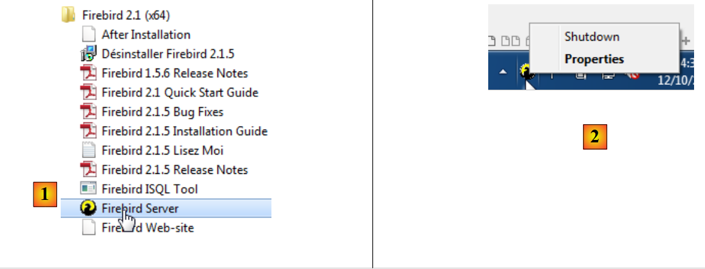
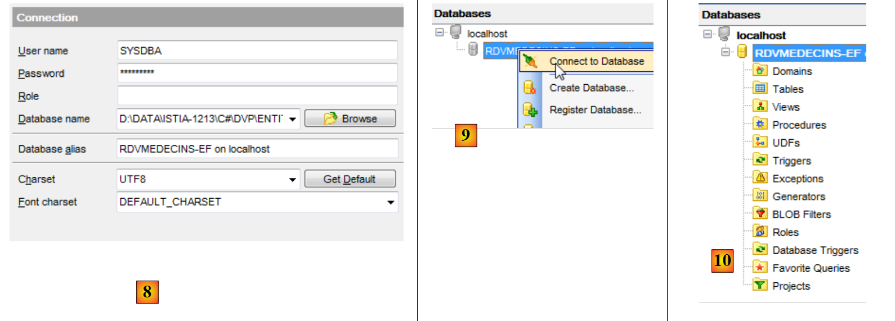
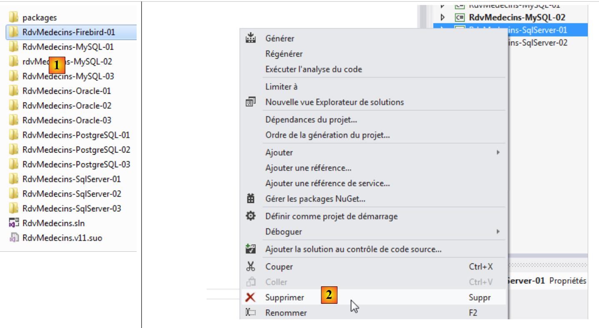
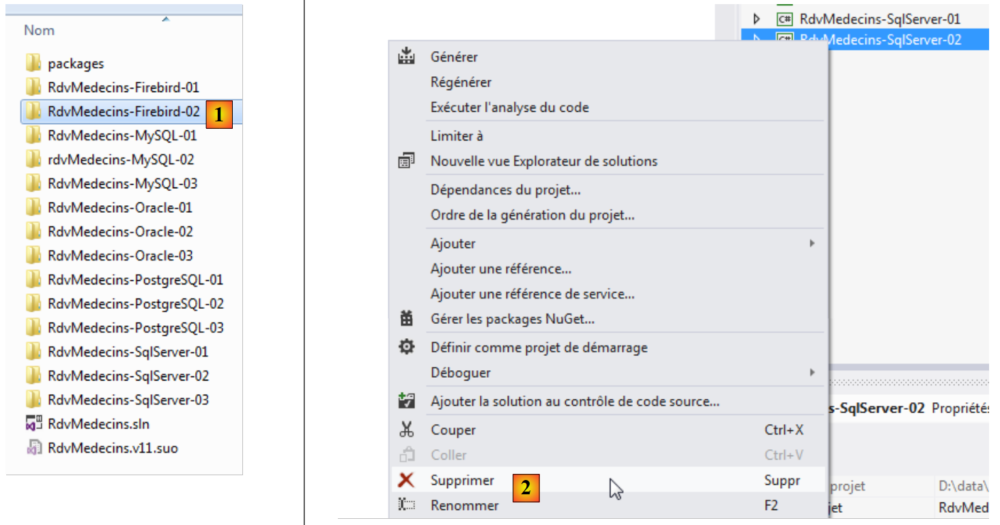

7. Casestudy met Firebird 2.1
7.1. Installatie van de tools
De volgende tools moeten worden geïnstalleerd:
- SGBD: [http://www.firebirdsql.org/en/firebird-2-1-5/];
- een beheertool: EMS SQL Manager voor InterBase/Firebird Freeware [http://www.sqlmanager.net/fr/products/ibfb/manager/download].
In de volgende voorbeelden is de gebruiker sysdba met het wachtwoord masterkey.
Start Firebird op en vervolgens de tool [SQL Manager Lite for Firebird], waarmee we SGBD gaan beheren.
 |
- in [1] starten we de Firebird-tool SGBD vanuit het Startmenu. Hier is SGBD niet als Windows-service geïnstalleerd;
- in [2] wordt de service gestart. Er is een pictogram verschenen rechtsonder op het scherm. Met een rechtermuisklik hierop kan men de SGBD stoppen.
We starten nu het hulpprogramma [SQL Manager Lite for Firebird] waarmee we de SGBD [3] gaan beheren.
 |
- in [4] maken we een nieuwe database aan;
- in [5] bevestigen we;
 |
- in [5] loggen we in als SYSDBA / masterkey;
- in [6] geven we de locatie aan van het bestand dat zal worden aangemaakt. De database wordt namelijk in één enkel bestand aangemaakt;
- in [7] bevestigt men de opdracht SQL die zal worden uitgevoerd;
 |
- in [8] is de database aangemaakt. Deze moet nu worden opgeslagen in [EMS Manager]. De gegevens kloppen. We voeren [OK] uit;
- in [9] maken we verbinding;
- in [10] geeft [EMS Manager] de database weer, die voorlopig nog leeg is.
We gaan nu een VS 2012-project aan deze database koppelen.
7.2. De database aanmaken op basis van de entiteiten
We beginnen met het dupliceren van de projectmap [RdvMedecins-SqlServer-01] naar [RdvMedecins-Firebird-01] en [1]:
 |
- naar [2]. In VS 2012 verwijderen we het project [RdvMedecins-SqlServer-01] uit de oplossing;
 |
- in [3] is het project verwijderd;
- in [4] voegen we er een ander aan toe. Dit project bevindt zich in de map [RdvMedecins-Firebird-01] die we eerder hebben aangemaakt;
 |
- in [5] heet het geladen project [RdvMedecins-SqlServer-01];
- in [6], wijzigen we de naam in [RdvMedecins-Firebird-01]
 |
- in [7] wordt er nog een project aan de oplossing toegevoegd. Dit project komt uit de map [RdvMedecins-SqlServer-01] van het project dat we eerder uit de oplossing hebben verwijderd;
- in [8] is het project [RdvMedecins-SqlServer-01] weer aan de oplossing toegevoegd.
Het project [RdvMedecins-Firebird-01] is identiek aan het project [RdvMedecins-SqlServer-01]. We moeten enkele wijzigingen aanbrengen. In [App.config] gaan we de verbindingsstring aanpassen en het project [DbProviderFactory] moeten we aanpassen aan elk project SGBD.
<!-- verbindingsstring naar de database -->
<connectionStrings>
<add name="monContexte" connectionString="User=SYSDBA;Password=masterkey;Database=D:\data\istia-1213\c#\dvp\Entity Framework\databases\firebird\RDVMEDECINS-EF.GDB;DataSource=localhost;
Port=3050;Dialect=3;Charset=NONE;Role=;Connection lifetime=15;Pooling=true;MinPoolSize=0;MaxPoolSize=50;Packet Size=8192;ServerType=0;" providerName="FirebirdSql.Data.FirebirdClient" />
</connectionStrings>
<!-- de factory-provider -->
<system.data>
<DbProviderFactories>
<add name="Firebird Client Data Provider" invariant="FirebirdSql.Data.FirebirdClient" description=".Net Framework Data Provider for Firebird" type="FirebirdSql.Data.FirebirdClient.FirebirdClientFactory, FirebirdSql.Data.FirebirdClient, Version=2.7.7.0, Culture=neutral, PublicKeyToken=3750abcc3150b00c" />
</DbProviderFactories>
</system.data>
- regel 3: de gebruiker en het wachtwoord, evenals het volledige pad naar de Firebird-database;
- regels 8-10: de DbProviderFactory. Regel 9 verwijst naar een DLL [FirebirdSql.Data.FirebirdClient] die we niet hebben. We verkrijgen deze met NuGet en [1]:
 |
- in [2], in het zoekveld typ je het trefwoord firebird;
- in [3] kiest u het pakket [Firebird ADO.NET Data Provider]. Dit is een connector ADO.NET voor Firebird;
 |
- in [4], de nieuwe referentie;
- in [5], in [App.config] moet de juiste versie van DLL worden ingevuld. Deze is te vinden in de eigenschappen ervan.
In het bestand [Entites.cs] moet het schema van de tabellen die zullen worden gegenereerd, worden aangepast:
[Table("MEDECINS")]
public class Medecin : Personne
{...}
[Table("CLIENTS")]
public class Client : Personne
{...}
[Table("CRENEAUX")]
public class Creneau
{...}
[Table("RVS")]
public class Rv
{...}
Hier hebben de tabellen geen schema.
We configureren de uitvoering van het project:
 |
- in [1] geven we de assembly die gegenereerd gaat worden een andere naam;
- in [2] geven we ook een andere standaardnaamruimte op;
- in [3] geven we aan welk programma moet worden uitgevoerd.
In dit stadium zijn er geen compilatiefouten. Laten we het programma [CreateDB_01] uitvoeren. We krijgen de volgende uitzondering:
We herinneren ons dat we dezelfde fout hebben gehad met MySQL, Oracle en PostgreSQL. Dit heeft te maken met het veldtype Timestamp van de entiteiten. We voeren dezelfde wijziging door als bij de twee voorgaande SGBD-velden. In de entiteiten vervangen we de drie regels
[Column("TIMESTAMP")]
[Timestamp]
public byte[] Timestamp { get; set; }
door de volgende:
[ConcurrencyCheck]
[Column("VERSIONING")]
public int? Versioning { get; set; }
We wijzigen dus het type van de kolom van byte[] naar int?. In SGBD zullen we opgeslagen procedures gebruiken om dit geheel getal met één te verhogen telkens wanneer een rij wordt ingevoegd of gewijzigd.
We voeren de bovenstaande wijziging door voor de vier entiteiten en voeren de toepassing vervolgens opnieuw uit. We krijgen dan de volgende foutmelding:
Regel 1 geeft aan dat de database in gebruik is. Dat was volgens mij niet het geval en ik ben er niet in geslaagd dit probleem op te lossen.
Maakt niet uit. We gaan de database [RDVMEDECINS-EF] handmatig aanmaken met de tool [EMS Manager for Firebird]. We beschrijven niet alle stappen, maar alleen de belangrijkste.
De Firebird-database ziet er als volgt uit:
De tabellen
 |
- in [1] is ID een primaire sleutel met het attribuut Autoincrement. Deze wordt automatisch gegenereerd door SGBD;
 |
 |
 |
De verschillende tabellen hebben dezelfde primaire en vreemde sleutels als in de voorgaande voorbeelden. De vreemde sleutels hebben de attributen ON, DELETE en CASCADE.
De generatoren
Net als bij Oracle en PostgreSQL hebben we generatoren voor opeenvolgende getallen aangemaakt. Er zijn er 5: [1].
 |
- [CLIENTS_ID_GEN] wordt gebruikt om de primaire sleutel van de tabel [CLIENTS] te genereren;
- [MEDECINS_ID_GEN] wordt gebruikt om de primaire sleutel van de tabel [MEDECINS] te genereren;
- [CRENEAUX_ID_GEN] wordt gebruikt om de primaire sleutel van de tabel [CRENEAUX] te genereren;
- [RVS_ID_GEN] wordt gebruikt om de primaire sleutel van de tabel [RVS] te genereren;
- [VERSIONS_GEN] wordt gebruikt om de waarden van de kolommen [VERSIONING] van alle tabellen te genereren.
De triggers
Een trigger is een procedure die door SGBD wordt uitgevoerd vóór of na een gebeurtenis (invoegen, wijzigen, verwijderen) in een tabel. We hebben er 8: [1]:
 |
Laten we eens kijken naar de code van de trigger die de kolom van de tabel bijvult:
- regel 2: vóór elke invoeging in de tabel [CLIENTS];
- regels 6-7: als de kolom ID gelijk is aan NULL, dan wordt hieraan de volgende waarde van de getallengenerator [CLIENTS_ID_GEN] toegewezen.
De triggers [ BI_CLIENTS_ID, BI_MEDECINS_ID, BI_CRENEAUX_ID, BI_RVS_ID] zijn allemaal op dezelfde manier opgebouwd.
Laten we nu eens kijken naar de code DDL van de trigger [CLIENTS_VERSION_TRIGGER], die de kolom [VERSIONING] van de tabel [CLIENTS] vult:
- regels 1-3: vóór elke bewerking INSERT of UPDATE op de tabel [CLIENTS];
- regel 6: de kolom ["VERSIONING"] krijgt de volgende waarde van de getallengenerator [VERSIONS_GEN]. Deze generator vult de kolommen ["VERSIONING"] van de vier tabellen.
De triggers [MEDECINS_VERSION_TRIGGER, CRENEAUX_VERSION_TRIGGER, RVS_VERSION_TRIGGER] werken op dezelfde manier.
Het script voor het genereren van de tabellen van de Firebird-database [RDVMEDECINS-EF] is in de map [RdvMedecins / databases / Firebird] geplaatst. De lezer kan dit laden en uitvoeren om zijn tabellen aan te maken.
Zodra dit is gebeurd, kunnen de verschillende programma’s van het project worden uitgevoerd. Ze leveren dezelfde resultaten op als met SQL Server, behalve het programma [ModifyDetachedEntities], dat om dezelfde reden crasht als bij Oracle en MySQL. Het probleem wordt op dezelfde manier opgelost. Het volstaat om het programma [ModifyDetachedEntities] uit het project [RdvMedecins-Oracle-01] naar het project [RdvMedecins-Firebird-01] te kopiëren.
7.3. Meerlaagse architectuur op basis van EF 5
We keren terug naar onze casestudy die in paragraaf 2 is beschreven.
 |
We beginnen met het opzetten van de gegevenslaag [DAO]. Hiervoor dupliceren we het consoleproject VS 2012 [RdvMedecins-SqlServer-02] in [RdvMedecins-Firebird-02] [1]:
 |
- naar [2], en verwijderen we het project [RdvMedecins-SqlServer-02];
 |
- in [3] voegen we een bestaand project toe aan de oplossing. We halen het uit de map [RdvMedecins-Firebird-02] die zojuist is aangemaakt;
- in [4] heeft het nieuwe project dezelfde naam als het verwijderde project. We gaan de naam wijzigen;
 |
- in [5] hebben we de naam van het project gewijzigd;
- in [6], we wijzigen enkele eigenschappen ervan, zoals hier de naam van de assembly;
- in [7] wordt de map [Models] verwijderd en vervangen door de map [Models] van het project [RdvMedecins-Firebird-01]. De twee projecten delen namelijk dezelfde sjablonen.
 |
- in [8], de huidige verwijzingen van het project;
- in [9] is de Firebird-connector ADO.NET toegevoegd met behulp van de tool NuGet.
In het bestand [App.config] worden de gegevens van de SQL-database vervangen door die van de Firebird-database. Deze zijn te vinden in het bestand [App.config] van het project [RdvMedecins-Firebird-01]:
<!-- verbindingsstring naar de database -->
<connectionStrings>
<add name="monContexte" connectionString="User=SYSDBA;Password=masterkey;Database=D:\data\istia-1213\c#\dvp\Entity Framework\databases\firebird\RDVMEDECINS-EF.GDB;DataSource=localhost;
Port=3050;Dialect=3;Charset=NONE;Role=;Connection lifetime=15;Pooling=true;MinPoolSize=0;MaxPoolSize=50;Packet Size=8192;ServerType=0;" providerName="FirebirdSql.Data.FirebirdClient" />
</connectionStrings>
<!-- de factory provider -->
<system.data>
<DbProviderFactories>
<add name="Firebird Client Data Provider" invariant="FirebirdSql.Data.FirebirdClient" description=".Net Framework Data Provider for Firebird" type="FirebirdSql.Data.FirebirdClient.FirebirdClientFactory, FirebirdSql.Data.FirebirdClient, Version=2.7.7.0, Culture=neutral, PublicKeyToken=3750abcc3150b00c" />
</DbProviderFactories>
</system.data>
De door Spring beheerde objecten veranderen ook. Momenteel hebben we:
<!-- Spring-configuratie -->
<spring>
<context>
<resource uri="config://spring/objects" />
</context>
<objects xmlns="http://www.springframework.net">
<object id="rdvmedecinsDao" type="RdvMedecins.Dao.Dao,RdvMedecins-SqlServer-02" />
</objects>
</spring>
Regel 7 verwijst naar de assembly van het project [RdvMedecins-SqlServer-02]. De assembly is nu [RdvMedecins-Firebird-02].
Nu dit is gebeurd, zijn we klaar om de test van de laag [DAO] uit te voeren. Eerst moet de database worden gevuld (programma [Fill] van het project [RdvMedecins-Firebird-01]). De test slaagt.
We maken de DLL van het project aan, net zoals we dat hebben gedaan voor het project [RdvMedecins-SqlServer-02], en we verzamelenalle DLL-bestanden van het project in een map [lib] die is aangemaakt in [RdvMedecins-Firebird-02]. Dit worden de referenties voor het webproject [RdvMedecins-Firebird-03] dat hierna volgt.
 |
We zijn nu klaar om de laag [ASP.NET] van onze applicatie te bouwen:
 |
We gaan uit van het project [RdvMedecins-SqlServer-03]. We dupliceren de map van dit project naar [RdvMedecins-Firebird-03] en [1]:
 |
- in [2], met VS 2012 Express voor het web, openen we de oplossing van de map [RdvMedecins-Firebird-03];
- in [3] wijzigen we zowel de naam van de oplossing als de naam van het project;
 |
- in [4], de huidige verwijzingen van het project;
- in [5] verwijderen we deze;
- in [6], om ze te vervangen door verwijzingen naar de DLL die we zojuist hebben opgeslagen in een map [lib] van het project [RdvMedecins-Firebird-02].
Nu hoeven we alleen nog maar het bestand [Web.config] aan te passen. We vervangen de huidige inhoud ervan door de inhoud van het bestand [App.config] uit het project [RdvMedecins-Firebird-02]. Zodra dit is gebeurd, voeren we het webproject uit. Het werkt. Vergeet niet de database te vullen voordat je de webapplicatie uitvoert.